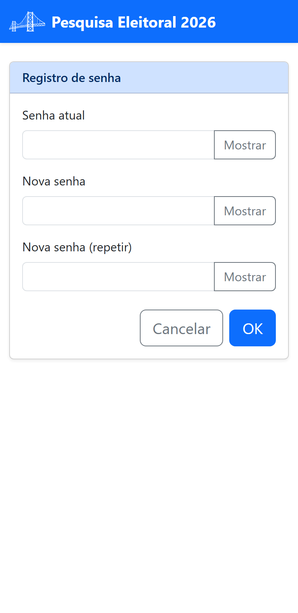

Parte 1 — Acesso
2. Obter acesso e entrar
Para passar a ter uma conta de coordenador(a), você cria você mesmo(a) a sua conta. O aplicativo envia um link de acesso para o seu e-mail; ao abrir esse link, você define a sua senha e passa a entrar normalmente.
2.1 Criar a sua conta
Na tela de entrada, toque em Adicionar uma conta. Abre-se o Cadastro de coordenador(a) de pesquisa:

- Preencha Nome completo, Empresa (opcional), CPF / CNPJ, E-mail e Telefone.
- Confirme o código de verificação (captcha) exibido na tela.
- Toque em Criar conta.
O aplicativo envia um link de acesso para o seu e-mail. Se a conta não for acessada nas próximas 12 horas, ela fica desativada — por isso, abra o link logo após o cadastro. Se o prazo passar, peça um novo link de acesso: nada do que você cadastrou é perdido.
2.2 Primeiro acesso: definir a sua senha
Abra o e-mail que o aplicativo enviou e toque no link de acesso. Ele abre a tela de ativação da sua conta, onde você define a sua senha:

- Nova senha: a senha que você passará a usar;
- Nova senha (repetir): a mesma senha, para conferência.
Toque em OK. Pronto — a senha é sua e ninguém mais a conhece.
Abra o link no mesmo aparelho e navegador em que você fez o cadastro. Por segurança, o aplicativo pode recusar o link aberto em outro navegador — nesse caso, refaça o pedido a partir da tela de login.
2.3 Entrar no aplicativo (login)
Definida a senha, abra o endereço do aplicativo. Você verá a tela Entrar:

- No campo Usuário, digite o seu e-mail.
- No campo Senha, digite a senha que você definiu. Toque em Mostrar para conferir o que digitou.
- Toque em OK.
2.4 Esqueci a senha
Na tela de login, toque em Recuperar senha, informe o seu e-mail e toque em OK. O aplicativo envia para o e-mail cadastrado um link para redefinir a senha — o mesmo caminho do primeiro acesso: você abre o link e define uma senha nova.
2.5 Trocar a senha ou editar seus dados
Já dentro do aplicativo, no menu do topo da tela de boas-vindas, use Editar dados do(a) coordenador(a) de pesquisa. Lá você atualiza seus dados de cadastro e, pelo botão Alterar senha, troca a senha quando quiser:

Aqui, diferentemente do primeiro acesso, o aplicativo pede a senha atual antes da nova — é você confirmando que é você.
Ao terminar, use sempre Sair (no menu do topo) para encerrar a sessão com segurança — especialmente em aparelhos compartilhados.